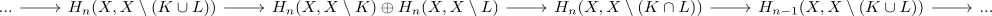
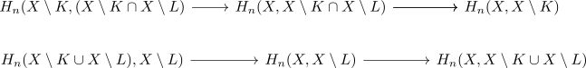
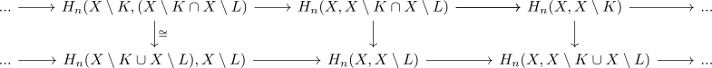

mayer vietoris for local homology at closed subsets
Proposition
Let $X$ be a topological space and $L,K \subsetq X$ be closed Then there exists a long exact sequence

Proof
corollary of:
for
- $A = B = X$
- $C = X \setminus L$
- $D = X \setminus K$
Alternatively
using the long exact sequence of a triple of spaces gives

Then applying excision of relative singular homology for
\begin{align*}
X =& X \setminus K \cup X \setminus L \\
A =& X \setminus L \\
U =& (K \cap X \setminus L)
\end{align*}
and
\begin{align*}
H_*(X \setminus U, A \setminus U) \cong H_*(X, A)
\end{align*}
results in sequence

hence this statement follows from the algebraic mayer-vietoris sequence